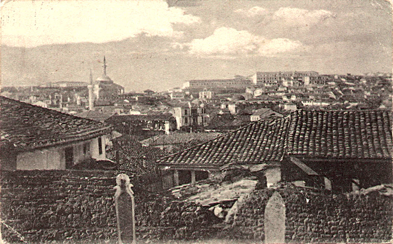
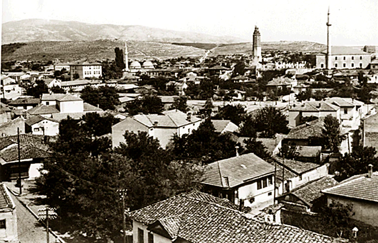
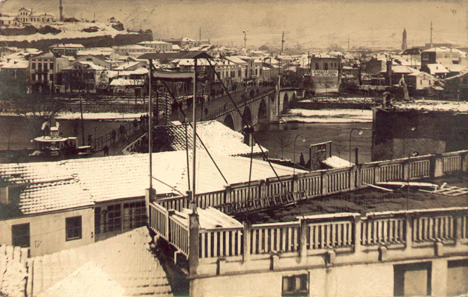

Skopje 1916 - 1917 panorama 2
Documents from the Balkan Wars
- Year
- 1916-1917
- Length
- 00:12

Skopje towards the end of the 19th century. View of the undeveloped land of the new quarter on the right bank of the Vardar. In the background is the city fortress - Kale. On the right is the Gazi Baba hill.

End of the 19th century. The undeveloped land on the right bank of the Vardar, with only a few houses along the river. In the background rises the Skopje fortress - Kale.

Skopje in 1888, photographed from the Gazi Baba hill towards the Skopje fortress - Kale.

View of the city from the Clock Tower, towards the northern part of Skopje with the old Turkish and Macedonian quarters. In the background is the Gazi Baba hill. (end of the 19th century)

Skopje - view of the old part with the old bazaar. In the background is the Mustafa Pasha Mosque, and to its right the Skopje fortress - Kale with the barracks. In the foreground are houses in the Gazi Baba quarter - end of the 19th century.

Skopje, beginning of the 20th century. View from the Clock Tower of the old public, trading and crafts centre with the bazaar. New architectural forms in the old urban fabric. In the background the Mustafa Pasha Mosque and the city fortress with the barracks dominate. Below it is the Pasha Yiğit Bey Mosque, the oldest mosque in Skopje (it no longer exists).

View from the Skopje fortress - Kale towards Mount Vodno. Just below the Kale is the Jewish quarter. The Vardar and the Stone Bridge can be seen, and right next to it the Burmali Mosque
- beginning of the 20th century.

View from the Skopje fortress - Kale towards Mount Vodno. Just below the Kale is the Jewish quarter. The Vardar and the Stone Bridge can be seen, and right next to it the Burmali Mosque
- beginning of the 20th century.

View of the Jewish quarter and the city from the Skopje fortress - Kale. In the foreground is the synagogue (without a roof). On the right is the Stone Bridge - beginning of the 20th century.

View from the Skopje fortress - Kale towards the Stone Bridge and the Burmali Mosque. This photograph shows how little the city had spread onto the right bank of the Vardar. It was taken towards the end of the 19th century. Far in the background is the brewery, or the "Birarija" as it was then called. In the foreground is part of the Jewish quarter.

Panoramic view of the central city area at the end of the 19th century. In the middle is the Turkish theatre. On the right bank of the Vardar, right next to the Stone Bridge, is the Burmali Mosque.

The photograph was taken from the walls of the Skopje fortress - Kale, before the First World War. At the foot are houses of the Jewish quarter, the school and the synagogue. On the left is the Church of St Demetrius.

Panoramic shot from the Skopje fortress - Kale at the beginning of the 20th century. In front are a few soldiers from the barracks. At the foot are houses of the Jewish and Pajko quarters, then the Stone Bridge, and right next to it the Burmali Mosque. Beyond it the new part of Skopje continues, and in the distance the brewery can be made out.

View from the Skopje fortress - Kale towards the mountains Vodno and Kitka. In the middle of the photograph is the Stone Bridge, and right next to it the Burmali Mosque.

Skopje during the First World War. The photograph shows a camp of the Serbian army near the Church of the Holy Saviour, whose bell tower can be seen in the background.

Panorama of Skopje - the 1920s. At the foot is the Jewish quarter with the school and the synagogue. The National Theatre is being built.

Panoramic picture of Skopje (around 1920). It is interesting to see Mount Vodno here: bare, unlike today, when it is covered in beautiful forests. It was afforested after the Second World War through organised youth work actions. In the foreground is the Jewish quarter with the synagogue and the Jewish school.

View of the city of Skopje from the Skopje fortress - Kale. In the foreground is the Jewish quarter with the synagogue, the school and the National Theatre. On the left of the photograph are the Stone Bridge and the Officers' Club under construction - the 1920s.

Skopje, the 1920s. View from the Skopje fortress - Kale over the Jewish quarter.

Panoramic photograph of Skopje from Gazi Baba towards the Skopje fortress - Kale. (beginning of the 20th century)

The Mustafa Pasha Mosque in the background, and below it, partly visible, the Pasha Yiğit Bey Mosque, the oldest mosque in Skopje. (it no longer exists)

View of Skopje from Gazi Baba. In the foreground is the dense housing of the residential quarters. In the background are the Mustafa Pasha Mosque and the military barracks in the southern and northern parts of the city fortress - Kale.

View of the old part of the city on the left bank of the Vardar. In the foreground are private houses. In the middle is the complex of the old Skopje bazaar. At the back the Mustafa Pasha Mosque dominates, and behind it are the city prison and the barracks on the Kale. Below the Mustafa Pasha Mosque is the Pasha Yiğit Bey Mosque, the oldest mosque in Skopje (it no longer exists). (the 1920s)

Panorama of the old urban fabric of the city, changed by Europeanisation and new buildings in classical, eclectic and other styles. Photographed from the Clock Tower towards the Mustafa Pasha Mosque. On the right is the Skopje fortress - Kale with the barracks - the 1920s.

Čair - an old part of the city (today's Čair municipality). In the foreground is the Gazi Isa Bey Mosque, and in the background the Yahya Pasha Mosque. - around 1920

Panorama of Skopje - the left bank with the Čair neighbourhood and part of Gazi Baba. In the foreground is the Gazi Isa Bey Mosque, and in the background the Yahya Pasha Mosque. (the 1920s)

Clock Tower - built in 1566-72. In the background are the Gazi Isa Bey Mosque and the Yahya Pasha Mosque - the 1920s.

Panorama of the old part of the city, towards Gazi Baba. View from the Skopje fortress - Kale. On the far right is the Sultan Murad Mosque, and to its left the Clock Tower. In the same line further left is the Gazi Isa Bey Mosque - the 1920s.

Panoramic view of the central city area. - the 1920s.

A winter landscape of the central area of the city. In the foreground are haphazard buildings, on whose site the National Bank was later built. The terrace on part of the building is a summer cinema: the two poles at the end hold the screen, and chairs for the audience were set out on the empty space. Top left is the Skopje fortress - Kale. (the 1920s)

Aerial shot of the central part of the city (around 1928), dominated by the Officers' Club, the Stone Bridge, the National Theatre and the Jewish quarter. Upstream on the Vardar is the wooden bridge leading to the National Theatre. Top right is part of the Kale. In the foreground is part of the new quarter. Taken in summer, as the river is very low.

Aerial shot of the central part of the city (around 1928), dominated by the Officers' Club, the Stone Bridge, the National Theatre and the Jewish quarter. Upstream on the Vardar is the wooden bridge leading to the National Theatre. Top right is part of the Kale. In the foreground is part of the new quarter. Taken in summer, as the river is very low.

Panoramic aerial photograph of Skopje, mostly of the right bank of the Vardar, dominated by the Officers' Club. On the right is the Ristić Palace. In front of it is the square, with landscaped greenery in the middle. Horse cabs can also be seen; the square was their main stand. The Stone Bridge links the two banks. Bottom right is the National Theatre, a beautiful building still mourned by many old Skopje residents.

Panoramic shot of the left part of the city with the Stone Bridge and the quarters: the Jewish quarter on the left, the Pajko quarter on the right. To the right of the bridge is the monument to the fallen in the Balkan Wars, which stood in front of the Ottoman Bank. In the background are parts of mosques, the Clock Tower and the Čair and Gazi Baba neighbourhoods. (the 1920s)

Panoramic picture of Skopje: the left quay of the Vardar with part of the Jewish quarter, the Pajko quarter and the Stone Bridge. (the 1920s)

View of the Stone Bridge from the tower of the Officers' Club. Right next to the bridge, on the right, was the surgery of the dentist Dr Ruben, and a little further right the Ottoman Bank. Between them was a little square with a horse-cab stand, and in the middle of the square the monument to the fallen fighters - around 1927.

View of the Stone Bridge from the tower of the Officers' Club. Right next to the bridge, on the right, were the surgery of the dentist Dr Ruben and the agricultural bank. On the right is the Ottoman Bank. Between them was a little square with a horse-cab stand, and in the middle of the square the monument to the fallen in the Balkan Wars - around 1927.

View of the Stone Bridge from the tower of the Officers' Club. Right next to the bridge, on the right, was the surgery of the dentist Dr Ruben, and a little further right the Ottoman Bank. Between them was a little square with a horse-cab stand, and in the middle of the square the monument to the fallen fighters - around 1927.

View towards the Stone Bridge on the Vardar and part of the left bank, the Pajko quarter, photographed from the tower of the Officers' Club. Right next to the bridge, on the right, was the surgery of the dentist Dr Ruben. On the right is the Ottoman Bank. Between them was a little square with a horse-cab stand, and in the middle of the square the monument to the fallen in the Balkan Wars - around 1927.

Panoramic shot - view of the Stone Bridge, with the Skopje fortress - Kale in the background and the Jewish quarter - the 1920s.
.

Skopje after 1930. On the left is the National Bank, on the right the Officers' Club. In the foreground are part of the minaret of the Ibni Pajko Mosque and the building of the dentist Dr Ruben. On the little square there was a bakery with the tastiest simit bread in Skopje and a horse-cab stand.

View of the Vardar with the Skopje fortress - Kale, with the city on the right. The Officers' Club and the National Bank can be seen. - the 1930s

A beautiful photograph of the city and the course of the Vardar. On the left is the Skopje fortress - Kale. In the centre are the Officers' Club and the National Bank. On the right is Mount Vodno, and in the distance the outline of Mount Kitka. - the 1930s

A beautiful view of the Vardar with Mount Vodno and the Bunjakovec neighbourhood. The Officers' Club and the National Bank can be seen. (the 1930s)

View of the Bunjakovec neighbourhood - the 1930s, with part of the city park on the right of the photograph.

Part of the newly built Bunjakovec neighbourhood in the 1920s. Two-storey buildings with modest architecture can be seen.

View of the Bunjakovec neighbourhood, the 1930s.

The Bunjakovec neighbourhood, today part of the central city area. Rows of planned residential buildings can be seen, built under the urban plan for the Bunjakovec neighbourhood.

A beautiful panoramic winter landscape, photographed from the Skopje fortress - Kale towards Mount Vodno. In the middle right are the Officers' Club and the Chamber of Commerce.

View of the Stone Bridge on the Vardar. On the other side of the river: the National Bank on the left, the Officers' Club on the right.

Panorama of Skopje - photographed from the Skopje fortress - Kale. Two buildings dominate: on the right the Officers' Club, on the left the National Bank. In the foreground is the Jewish quarter. (the 1930s)

Aerial photograph of the central part of the city, with the square, the Officers' Club and the National Bank. Higher up are the National Theatre and the little wooden bridge.

Aerial shot of the city, showing the square with the Officers' Club, the National Bank, the Chamber of Commerce, the Jewish and Pajko quarters and the Stone Bridge. Top left is the whole city fortress - Kale with the barracks. Next to it is the Mustafa Pasha Mosque, and in the background the Yahya Pasha Mosque can be made out.

Aerial photograph of the cathedral Church of the Holy Mother of God in Skopje, built in 1835 (in the centre, with a tall bell tower), and the Church of St Mina from 1902 (on the left, with two bell towers). The surroundings are the Pajko quarter.

Skopje, the 1930s. The old part of the city. View through a window with iron bars of an old Turkish building.

Panorama of the city. On the far left is the Sultan Murad Mosque, and to its right the Clock Tower. On the far right is the Gazi Isa Bey Mosque. In the distance are the National Bank and the Officers' Club, and behind them rises Mount Vodno. (the 1930s)

Panorama of the city. In the background is the Sultan Murad Mosque, and to its right the Clock Tower. On the far right is the Gazi Isa Bey Mosque. In the distance are the National Bank and the Officers' Club. (the 1930s)

Aerial shot of the city. At the bottom are the Stone Bridge and the Officers' Club. Further upstream is the little wooden bridge leading to the National Theatre and the Jewish quarter. At the top is the Skopje fortress - Kale with the barracks. Taken on 26 June 1933 at 10 a.m.

Empty, undeveloped land in front of today's Museum of the City of Skopje. On the left are the hotels "Bristol" and "Srpski Kralj" on the main street leading to the square. On the same street, in the centre of the photograph, is the Kranga Palace. (the 1930s)

Aerial shot of the square. In the foreground is the National Bank from the back, and to its right the Chamber of Commerce. Opposite the National Bank is the Officers' Club. On the right are the Vardar and part of the Stone Bridge. Upstream is the wooden bridge leading to the National Theatre, also visible in the top right corner of the photograph.

Documents from the Balkan Wars
 Aqueduct4 postcards
Aqueduct4 postcards Kale30 postcards
Kale30 postcards Bridges60 postcards
Bridges60 postcards Quay58 postcards
Quay58 postcards Square46 postcards
Square46 postcards Buildings66 postcards
Buildings66 postcards Christian churches19 postcards
Christian churches19 postcards Muslim buildings33 postcards
Muslim buildings33 postcards Officers' Club29 postcards
Officers' Club29 postcards Theatre28 postcards
Theatre28 postcards Railway station13 postcards
Railway station13 postcards Schools36 postcards
Schools36 postcards Parks12 postcards
Parks12 postcards Markets18 postcards
Markets18 postcards Streets38 postcards
Streets38 postcards Panorama I60 postcards
Panorama I60 postcards Panorama II30 postcards
Panorama II30 postcards Collages55 postcards
Collages55 postcards Floods9 postcards
Floods9 postcards Earthquake27 postcards
Earthquake27 postcards Skopje 200026 postcards
Skopje 200026 postcards